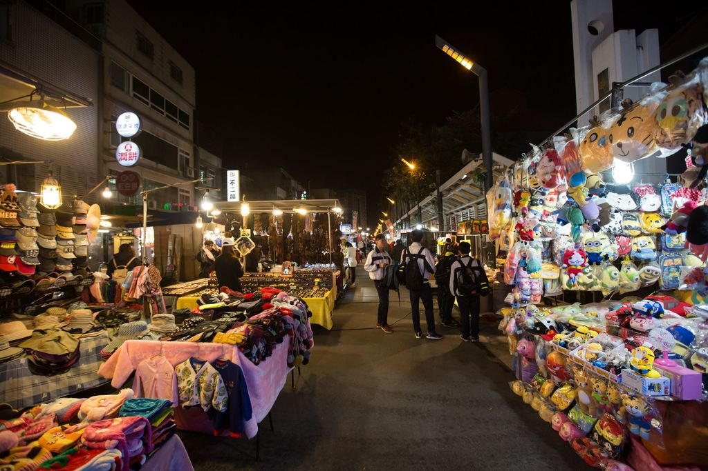

景點
食物
交通
首頁
人文歷史
自然生態
購物
觀光工廠
三坑老街
全年無休
大溪老街
周一 ~ 週日
慈湖陵寢
週三 ~ 週一: 09:00 ~ 17:00 週二休息
景福宮
每日 07:00 ~ 21:00
桃園忠烈祠暨神社文化園區
桃園忠烈祠: 週二至週日 09:00-17:00 桃園神社文化園區：週二至週日 09:00-18:00
拉拉山巨木區
每日:06:00 ~ 17:00
三坑自然生態公園
全年無休
小烏來天空步道
週三 ~ 週一: 08:00 ~ 12:00 、13:00 ~ 17:00 週二休息
石門水庫
每日 08:00 ~18:00
東眼山森林遊樂區
平日08:00 ~ 12:00 周末 08:00 ~ 17:00
桃園觀光夜市
每日:17:30 ~ 00:00

中壢觀光夜市
每日:17:00 ~ 00:00
魅力金三角
協會辦公時間: 週一 ~ 週五09:00 ~ 17:00 忠貞新村文化園區全日開放/園區店家暨商圈業者 請參考各店家。
樂天桃園棒球場
依照開賽時間而定
華泰名品城
平日 11:00 ~ 21:00 週末 11:00 ~ 22:00
可口可樂世界
星期一 ~ 星期五: 09:30 ~ 12:00 、14:00 ~ 16:30 六、日 休息
養樂多工廠
星期一 ~ 星期五: 8:00 ~ 17:00 六、日 休息
義美觀光工廠
導覽與DIY活動09:00-17:00、商店區與現烘麵包坊 : 07:00~22:00、見學餐廳 : 11:00~21:00
大溪老茶廠
每日:09:30 ~ 17:00
金車咖啡文教館
週一 ~ 週五 09:30 ~ 12:00 13:30 ~ 17:00
沒有搜尋結果
名稱: 三坑老街
時間: 全年無休
地址: 桃園市龍潭區三坑子
介紹:
三坑子老街就位於桃園市龍潭區，範圍大致上是以永福宮為聚落的核心，向外至黑白洗，老街呈現外窄內寬的型態，饒富古味，吸引許多遊客駐足。三坑子老街保留了客家的傳統特色，另外也是「大尾鱸鰻」、「愛讓我們在一起」等片拍攝地，值得一遊。
名稱: 大溪老街
時間: 周一 ~ 週日
地址: 桃園市大溪區和平路、中山路
介紹:
大溪是桃園最早發展的地方，透過大漢溪小帆船行駛淡水河，與大陸貿易興盛，造就了許多商號與商賈。日治大正時代流行巴洛克建築風格，和平路、中山路等老街，各商號融合巴洛克式繁飾主義和閩南傳統裝飾圖案，包括希臘山頭、羅馬柱子和中式的魚、蝙蝠等祈求吉慶的圖案混合，形成一種大溪專有的特色。和平老街因為開發較晚，老屋的保存狀況也較好，街上特色商店林立，十分熱鬧。
名稱: 慈湖陵寢
時間: 週三 ~ 週一: 09:00 ~ 17:00 週二休息
地址: 桃園市大溪區復興路一段1097號
介紹:
「慈湖陵寢」因中華民國先總統蔣介石先生長眠於此而聞名。慈湖分為前、後慈湖，湖岸水色迷人，楊柳垂青頗有江南風光之美，當年蔣先生以此處酷似浙江奉化老家，並對母親思念之情，而命名為慈湖，並闢建行館(閩浙混合式建築)，民國六十四年逝世便奉厝在此。
名稱: 景福宮
時間: 每日 07:00 ~ 21:00
地址: 桃園市桃園區中正路208號
介紹:
嘉慶16年間(1811)，桃仔園深受傳染病的危害，百姓遂捐錢蓋廟，耗時二年完工，命名為景福宮，當年規劃為前中後三殿，落成大典盛大邀請官員蒞臨，並受贈「赫聲濯靈｣、「德遍群黎｣、「明赫感應｣等三方匾額(現仍掛於廟內)，顯見此廟興建為地方一大盛事。
名稱: 桃園忠烈祠暨神社文化園區
時間: 桃園忠烈祠: 週二至週日 09:00-17:00
桃園神社文化園區：週二至週日 09:00-18:00
地址: 桃園市桃園區成功路三段200號
介紹:
座落於桃園市虎頭山上的桃園市忠烈祠，落成於民國二十七年，前身為日本人所建造的「桃園神社」，是臺灣保存最為完整的日治時代神社，建築風格融合了中國古代唐風、日本風及臺灣近代風，採用上等台灣檜木構築，並已在民國八十三年經公告正式被列為市定古蹟；也因為特殊的歷史文化價值，而被電影《KANO》選中成為拍片場景，引領觀眾深刻感受1930年代的歲月回憶。
名稱: 拉拉山巨木區
時間: 每日:06:00 ~ 17:00
地址: 桃園市復興區華陵里11鄰205號
介紹:
拉拉山巨木區地處桃園復興區與新北烏來區交界，全區海拔介於1500公尺至2130公尺，共有24株巨木，樹齡介於500年至1495年，是全台灣另一處可與阿里山齊名的巨木保護區。旅人循著巨木群環狀步道而行，即能一次近距離捕獲所有巨木。區內巨木除了9號巨木為台灣扁柏，其餘皆為台灣紅檜。
名稱: 三坑自然生態公園
時間: 全年無休
地址: 桃園市龍潭區三坑里堤防旁
介紹:
三坑自然生態公園位於景色優美的石門水庫大漢溪畔，佔地約3.8公頃，以佔地廣大的生態湖與周邊大草坪休憩區為主體，全區採用生態工法建造，並大量種植當地的原生花草樹種，將生態公園融合了自然景觀，並且規劃有休憩公園、涼亭、木拱橋、戲水渠道等設施，還可串連三坑自行車道，創造出休閒的運動健身空間。
名稱: 小烏來天空步道
時間: 週三 ~ 週一: 08:00 ~ 12:00、13:00 ~ 17:00 週二休息
地址: 桃園市復興區義盛里下宇內1鄰4-6號
介紹:
小烏來天空步道位於桃園市復興區，懸掛於小烏來瀑布上方，為了實現旅客漫步在雲端的夢想，桃園市政府耗資新台幣800萬元打造此座天空步道，後來更被民眾票選為全台最浪漫景點。天空步道外觀採簡約設計，以幾何線條配置，底部為強化玻璃的建築結構，凌空伸出11公尺的廊道，遊客只要站上距離瀑布底70公尺高的玻璃平台上，就能居高臨下欣賞小烏來溪谷的秀麗美景，以及氣勢磅礡的瀑布景觀，挑戰360度的全新視野。
名稱: 石門水庫
時間: 每日 08:00 ~18:00
地址: 桃園市大溪區復興里環湖路一段68號
介紹:
石門水庫曾經是遠東最大的水庫，目前亦是台灣北部的重要水庫之一，一年四季，湖光山色，風景秀麗。石門水庫對外可連接十幾個旅遊景點，園區大小公園綠樹成林，有自行車步道，也有環湖遊艇，提供旅客多元的休閒樂趣。
名稱: 東眼山森林遊樂區
時間: 平日08:00 ~ 12:00 周末 08:00 ~ 17:00
地址: 桃園市復興區霞雲里佳志35號
介紹:
東眼山森林遊樂區擁有長達16公里的森林浴步道，主要包含了可攀爬標高1,212公尺東眼山主峰的「自導式步道」；以林業文化及伐木集材展示為主題的「知性步道」；位於林道盡頭，一大一小狀似慈母帶著小孩的「親子峰步道」；展示約三千萬年前生痕化石的「化石林道」等四大登山步道，每條步道生態景觀、林相風光各有不同，讓遊客可以從不同角度來親近東眼山。
名稱: 桃園觀光夜市
時間: 每日:17:30 ~ 00:00
地址: 桃園市桃園區中正路與北埔路口
介紹:
桃園觀光夜市全長約3公里，設有超過200個攤位，以傳統小吃最具代表，舉凡各式地方小吃、台式料理、海鮮熱炒、甜湯冰品、滷味燒烤等，數家老字號小吃攤道盡不少桃園人成長的共同回憶；其他諸如小朋友的遊樂設施、時尚皮件、生活雜貨、家飾寢具、男女飾品、流行服飾，到各式日常用品等都可在此尋得，讓桃園夜市再度成為在地人的生活重心。
名稱: 中壢觀光夜市
時間: 每日:17:00 ~ 00:00
地址: 桃園市中壢區新明路
介紹:
中壢觀光夜市位於中壢區新明路，範圍在中央西路口與民權路口之間，全長約為700公尺，是桃園市數一數二的觀光夜市。一旁鄰近多所學校，早上為普通交通道路，會有許多校車行經此處，每到傍晚就開始擺攤，此時白天車水馬龍的新明路段，就會搖身一變成為攤販聚集的大本營，由兩旁的攤位圍起，與中間道路皆有規律的設置攤位，吸引大批人潮湧入，到了假日更是水洩不通，可說是越夜越美麗。
名稱: 魅力金三角
時間: 協會辦公時間: 週一 ~ 週五09:00 ~ 17:00
忠貞新村文化園區全日開放
地址: 桃園市平鎮區中壢、平鎮、八德三區交界的龍岡地區。
介紹:
商圈以滇緬泰移民為主的美食文化夙負盛名、孤軍首批撤軍來台棲身之忠貞新村原址雖已拆除、改建大樓，但忠貞市場400個傳統攤位、與超過50間各式米干店、國旗屋升旗典禮與雲南公園打歌活動，延續形成多元豐富的飲食文化、移民遷徙故事、多元民族節慶等商圈三大特色，兼容並蓄。
名稱: 樂天桃園棒球場
時間: 依照開賽時間而定
地址: 桃園市中壢區領航路一段1號
介紹:
不論是球賽或是演唱會，2009年啟用的樂天桃園棒球場﹙原名桃園國際棒球場﹚，至今已乘載著許多人的熱血回憶。根據統計，近年來光進場觀賞中華職棒例行賽的人次，每年就屢屢突破40萬大關，因此也被冠上｢超人氣球場｣的稱號。樂天桃園棒球場位於機場捷運A19桃園體育園區，享有｢捷運到站即到場｣的地利之便。周邊還有籃球場、壘球場、青埔棒球場、購物商場、桃園市立美術館以及大型旅宿，打造成全方位的休閒版圖。
名稱: 華泰名品城
時間: 平日 11:00 ~ 21:00 週末 11:00 ~ 22:00
地址: 桃園市中壢區春德路189號
介紹:
全台首座美式露天Outlets「華泰名品城」位於桃園高鐵站、機場捷運A18站旁。2015年底風光進駐，2019年5月全期擴大營運。匯集海內外超過285個國際品牌及人氣餐廳，天天提供2折以上的折扣優惠。透過創意行銷活動、優質商品與細膩服務，致力於帶給人們舒適愉悅的購物體驗！
名稱: 可口可樂世界
時間: 星期一 ~ 星期五: 09:30 ~ 12:00 、14:00 ~ 16:30 六、日 休息
地址: 桃園市桃園區龜山工業區興邦路46號
介紹:
想知道「可口可樂」如何建立起充滿歡樂魅力、豐富創意的國度嗎？歡迎來到位在桃園的「可口可樂世界」，來一趟「可口可樂」之旅，從時光長廊走進「可口可樂」的歷史，並探訪「可口可樂」的生產過程，以及「可口可樂」100多年來的精彩的發展故事，這一切都將在「可口可樂世界」為您展開！
名稱: 養樂多工廠
時間: 星期一 ~ 星期五: 8:00 ~ 17:00 六、日 休息
地址: 桃園市中壢區自強一路4號
介紹:
家喻戶曉的養樂多在台灣已經經營超過半個世紀了，養樂多工廠於民國88年從台北新莊遷移至桃園中壢，民國102年現地重建新廠房，現在的中壢新工廠是兼具綠能、環保、科技化的多元現代化工廠。
名稱: 義美觀光工廠
時間: 導覽與DIY活動09:00-17:00、商店區與現烘麵包坊 : 07:00~22:00、見學餐廳 : 11:00~21:00
地址: 桃園市蘆竹區南工路一段11號
介紹:
走一趟義美觀光工廠，可以滿足老饕們的味蕾，空氣中飄散的糕餅、麵包香、濃醇的咖啡香，餅乾、糖果、料理食材到冰品等，產品豐富多樣，工廠直送、新鮮味美、安全衛生。充滿生氣的義美生態園區，陳設著見證企業歷史軌跡的生產機具；典雅的歷史展示區，記錄義美一步一腳印，成長茁壯的故事。園區內除設有南北方點心世界、台灣料理，更有注重養生、健康的蔬食套餐，是幸福的賞味之旅。另在美食DIY糕餅區，有一系列DIY活動，只要預約，即可享受親手製作的樂趣與成就感。
名稱: 大溪老茶廠
時間: 每日:09:30 ~ 17:00
地址: 桃園市大溪區新峰里1鄰復興路二段732巷80號
介紹:
走訪大溪老茶廠，悠然開啟一場名為「品茗時光」的旅程。1926年日人興建角板山工廠，即大溪茶廠的前身，從此寫下大溪製茶的輝煌歷史，可謂當時的「茶金新貴」。然而1956年一場祝融之災讓茶廠幾乎全毀，自2010年開始台灣農林股份有限公司著手重建，才將這隱沒半世紀的茶韻風華，以新舊交融之姿，重現於世人眼前。
名稱: 金車咖啡文教館
時間: 週一 ~ 週五 09:30 ~ 12:00 13:30 ~ 17:00
地址: 桃園市中壢區榮民南路412號
介紹:
金車公司於1979年在桃園市中壢區設立工廠，並推出「金車麥根沙士」引起消費者的注意，爾後於工廠內設置咖啡生產線，開始生產罐裝咖啡，也就是現在的伯朗咖啡，並以伯朗先生作為至今不變的商標形象，伯朗先生洋化的外貌，象徵其源自於中南美洲，恰好與咖啡的盛產地相符合，這也是金車最初設計商標的概念。